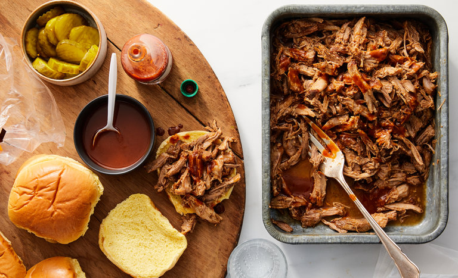

Instant Pot BBQ Pulled Pork

Description:
Don't have a smoker? Want delicious, tender, juicy, rendered BBQ pulled pork? Do you have an instant pot? Perfect. This recipe is just for you!
Ingredients:
- 4 lbs pork butt/shoulder
- 1 Tbsp Better Than Bouillion Chicken Flavor mixed in 1 cup of water
- 3 Tbsp brown sugar
- 1 tsp salt
- 1 tsp smoked paprika
- 1 tsp garlic powder
- 1 tsp onion powder
- 1 tsp coriander powder
- 1 tsp black pepper
- 1 tsp liquid smoke
- 2 tsp worcestershire sauce
- optional:cayenne powder to your spice liking
- optional: shredded cabbage
Steps:
- Cut the pork shoulder into 4 pieces
- Mix the dry seasoning together and rub it all over the pork shoulder
- Put the instant pot on Saute setting for 15 minutes so it does not turn off on you
- Brown each side of the pork shoulder for 2-3 minutes each and place in a bowl until all the pork is browned
- Turn the instant pot off
- Warm the 1 cup of water so the Better Than Bouillion can dissolve easier
- Pour mixture into the instant pot and mix and break down the cooked flavours from the browning into the broth
- Pour the liquid smoke and worcestershire sauce into the broth
- Place the pork shoulder into the instant pot as even as possible with some spacing in the middle if possible
- Pour in any remaining juices
- Set the Instant Pot to Pressure Cook for 60 minutes
- Turn off the keep warm function
- Allow for as much time possible for a natural release from the valve. Some newer Instant Pot models have this feature
- If you're in a rush, just allow for 20-30 minutes of rest after the timer goes off, and use the quick release function. Do not burn yourself!
- Remove your pork from the instant pot using a ladle. I dare you try to use tongs. It will fall apart instantly
- optional: place your shredded cabbage in the broth and close the lid for a few minutes to your texture liking. I like a little crunch so I flash the cabbage in there for a short period of time. Test it out and see what you like
- Using a fork, tongs, chopsticks, gloves, whatever you think is the best to shred the pork shoulder. It will be easy. But with better tools you can remove the fat better
- optional: place your shredded pork on top of the shredded cabbage
- Pour some leftover broth over the shredded pork. Use a fat/gravy separator first to reduce amount of fat transferred
- Pour your favorite BBQ sauce over and mix
- Serve with vegetables, rice, bread,dinner rolls, whatever you'd like!